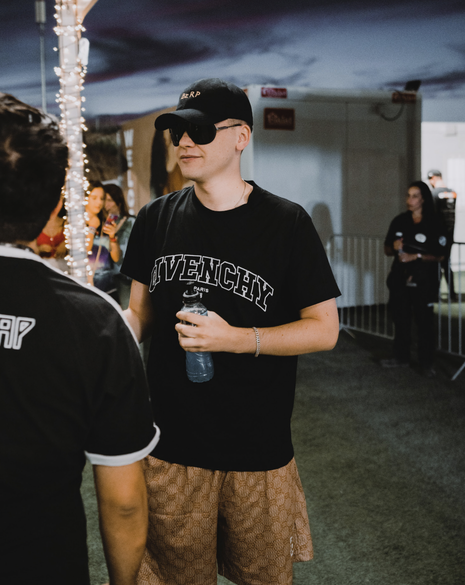

Videógrafo-Fotógrafo-Diseño
Videógrafo-Fotógrafo-Diseño |
SOBRE MI | ARTISTAS | DEPORTES | EVENTOS | PERSONAL | CONTACTO |
 |
MARTÍN MÉNDEZ Martín es un fotógrafo con un don único para representar y contar historias únicas e irrepetibles. Actualmente reside en la Ciudad de México pero su amor por los viajes y la aventura hace que pueda llevar su trabajo a c abo desde parte del mundo.La fotografía, el video y el diseño son las principales zonas en las que desarrolla su creatividad. Su perspectiva única dentro de la industria creativa es evidente a través de su estilo único en colores y la forma de edición.La narración es un elemento clave que enfatiza a través de su trabajo tanto personal como profesional. Al estar haciendo mi trabajo me siento la persona más afortunada del mundo, en primero lugar porque una persona esta confiando en misservicios para poder capturar momentos únicos e irrepetibles y en segundo porque verdaderamente disfruto lo que hago, viajar, tomar fotos,hacer videos y dar soluciones creativas son lo que que siempre había querído en mi vida y hoy día lo estoy logrando gracias a la confiaza de mis clientes. |
|
 |
 |
 |
Mi pasión por los estudios creativos nace por la necesidad de querergenerar un impacto positivo en el mundo, respondiendo a todo tipo de necesidades de mi entorno en relación a los cambios constantes a los que el mundo esta expuesto. Me destaco por ser una persona creativa, comunicativa, responsable, productiva, con facilidad en la busqueda de soluciones y con amplia capacidad de trabajo en equipo siempre estaré superando mis límites. Creativos independientemente si se trata de un viaje, una sesión de trabajo en el estudio, en otro país, diferente idioma o cuaquier otro tipo de “obstáculo” o reto que se me presente en el camino. Lo único que siempre se va a eserar de Martín es la creación de contenido verdaderamente único y de calidad. |